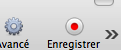
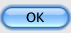
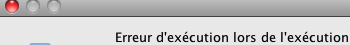
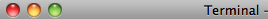
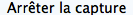
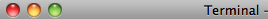
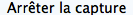

path=getBundlePath()
setBundlePath(path)
Settings.ObserveScanRate = 0.5 # Every 2 seconds
# Start video recording
switchApp('iShowU HD')
wait(Pattern().targetOffset(13,1),20)
click(Pattern().targetOffset(13,1))
flagRun = "R"
#popup("Start")
def handler(e):
click()
def endOfScript(e):
global flagRun
#RegScreen.stopObserver()
#secondScreen.stopObserver()
flagRun = "S"
def bounceFinder(e):
switchApp('Finder')
regBounce = Region(1271,863,169,37)
regBounce.ObserveScanRate = 5 # 5 Hz
regBounce.onAppear(, bounceFinder)
regBounce.observe(FOREVER, background = True)
RegScreen = Region(181,117,1115,729)
RegScreen.onAppear(, handler)
RegScreen.observe(FOREVER, background = True)
secondScreen = Region(0,254,687,588)
secondScreen.onAppear( , endOfScript)
secondScreen.observe(FOREVER, background = True)
switchApp('Terminal')
wait(,5)
type("n",KeyModifier.CMD)
paste('/Volumes/www/magictree/ZTesting/osx/safari/moe/display/test_plan2')
type(Key.ENTER)
while (flagRun == "R"):
wait(1)
# End video recording
#switchApp('iShowU HD')
click()
click()
click(Pattern().similar(0.92))
click()
#type("2",KEY_SHIFT | KEY_CMD)
#popup("Fin")
, endOfScript)
secondScreen.observe(FOREVER, background = True)
switchApp('Terminal')
wait(,5)
type("n",KeyModifier.CMD)
paste('/Volumes/www/magictree/ZTesting/osx/safari/moe/display/test_plan2')
type(Key.ENTER)
while (flagRun == "R"):
wait(1)
# End video recording
#switchApp('iShowU HD')
click()
click()
click(Pattern().similar(0.92))
click()
#type("2",KEY_SHIFT | KEY_CMD)
#popup("Fin")